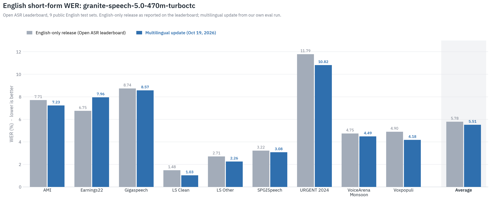
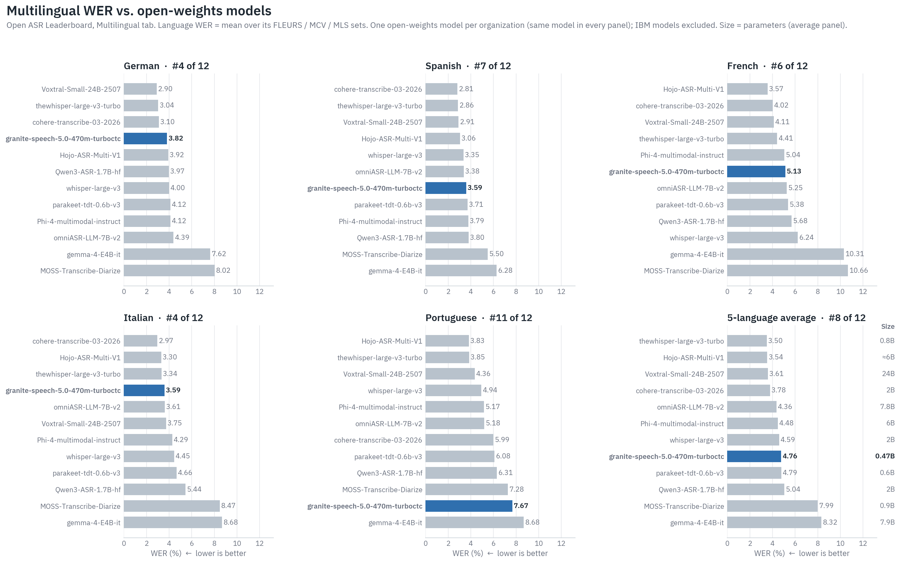
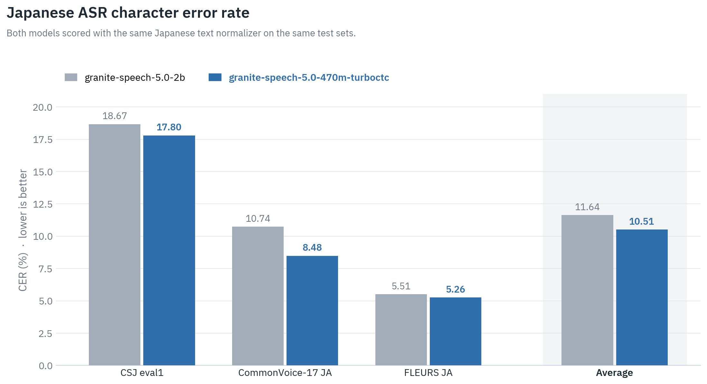
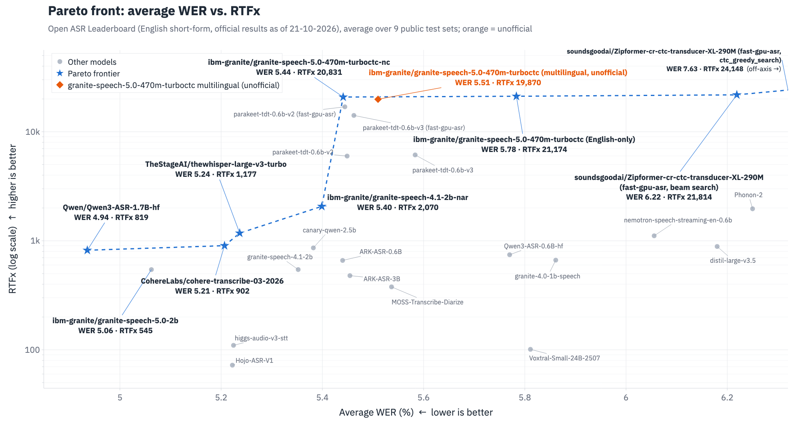
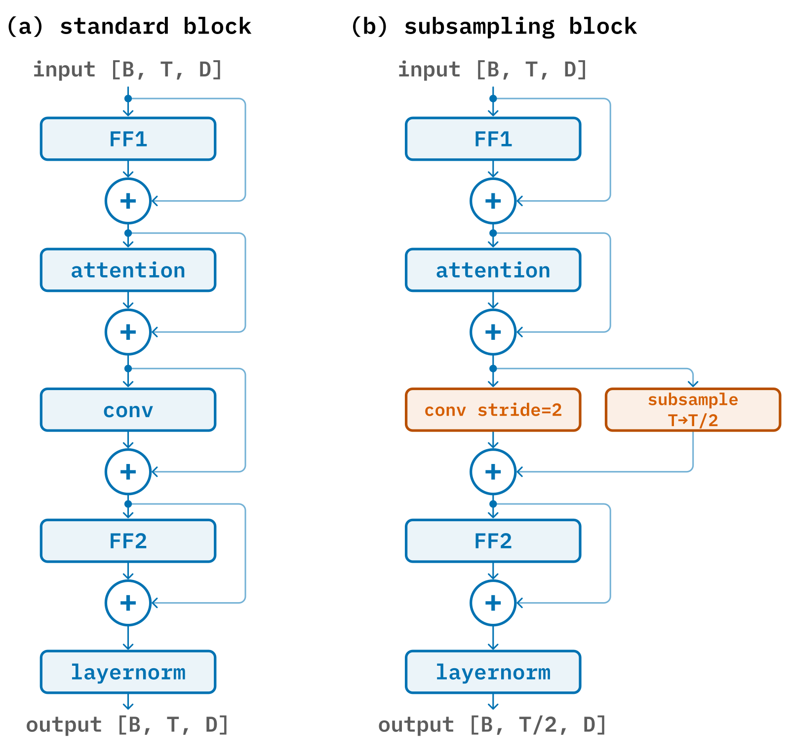

Granite-Speech-5.0-470M-TurboCTC
🎉 NEW (October 21, 2026): Granite Speech 5.0 TurboCTC is now multilingual!
🌍 7 Languages (En, Fr, De, Es, Pt, It, Ja)
❓ Native punctuation & capitalization
🚀 Better English WER (5.51% vs. 5.78%)
⏪ Previous English-only release: revision 947f59a
Model Summary: Granite Speech 5.0 TurboCTC is a compact 470 million parameter multilingual ASR model for English, French, German, Spanish, Portuguese, Italian and Japanese with very high inference speed that is well suited for deployment on laptops, smartphones and other edge devices. The model consists of a conformer acoustic encoder with block self-attention, self-conditioning and temporal downsampling with an output layer corresponding to 16,384 multilingual BPE units. It was trained on approximately 153,000 hours of multilingual audio from public corpora using Connectionist Temporal Classification (CTC) and inference is done non-autoregressively with greedy decoding. The model outputs punctuated and capitalized transcripts.
Evaluations:
We evaluated granite-speech-5.0-470m-turboctc on standard short-form English ASR benchmarks from the Open ASR leaderboard. Despite adding six languages and native punctuation, the multilingual update improves the average English WER over the original English-only release (5.51% vs. 5.78%):

We also evaluated multilingual ASR on the Open ASR leaderboard multilingual benchmarks (FLEURS, CommonVoice, MLS) for German, Spanish, French, Italian and Portuguese, against the best open-weights model of each organization:

For Japanese, which is not part of the Open ASR leaderboard multilingual benchmarks, we report the character error rate (CER) on CSJ eval1, CommonVoice-17 and FLEURS. The 470M-parameter granite-speech-5.0-470m-turboctc outperforms the 2B-parameter granite-speech-5.0-2b on all three test sets:

Accuracy vs. speed on the Open ASR leaderboard (English short-form, average over 9 public test sets, official results as of October 21, 2026; the orange marker is this model's unofficial result, the leaderboard entry is still the English-only release):

Release Date: October 21, 2026 (original English-only release: August 25, 2026)
License: Apache 2.0
Supported Languages: English, French, German, Spanish, Portuguese, Italian, Japanese
Intended Use: The model is intended to be used in enterprise applications that involve accurate low-latency/high-throughput multilingual speech-to-text transcription.
Usage:
Usage with transformers
Granite Speech 5.0 TurboCTC is supported natively in transformers>=5.16.0:
shellpip install transformers>=5.16.0 datasets
pythonfrom datasets import Audio, load_dataset from transformers import AutoModelForCTC, AutoProcessor model_id = "ibm-granite/granite-speech-5.0-470m-turboctc" processor = AutoProcessor.from_pretrained(model_id) model = AutoModelForCTC.from_pretrained(model_id, device_map="auto") ds = load_dataset("hf-internal-testing/librispeech_asr_dummy", "clean", split="validation") ds = ds.cast_column("audio", Audio(sampling_rate=processor.feature_extractor.sampling_rate)) speech_samples = [el["array"] for el in ds["audio"][:5]] # `device` computes the log-mel front-end on the model's accelerator, saving a host-to-device copy inputs = processor( speech_samples, sampling_rate=processor.feature_extractor.sampling_rate, device=model.device ) inputs.to(model.device, dtype=model.dtype) outputs = model.generate(**inputs) print(processor.batch_decode(outputs, skip_special_tokens=True))
Usage with mlx-audio for Apple Silicon M series chips
Install a recent version of mlx-audio (0.5.1 or later):
shellpip install -U mlx-audio
Sample use:
shellpython -m mlx_audio.stt.generate --model ibm-granite/granite-speech-5.0-470m-turboctc --verbose --audio "audio.wav" --output-path "transcript"
Model Architecture:
The architecture of granite-speech-5.0-470m-turboctc is unchanged from the original English-only release, apart from the multilingual output vocabulary, and consists of 16 conformer blocks trained with Connectionist Temporal Classification (CTC) with a 16,384 multilingual BPE classification head (see configuration below). We perform temporal subsampling by a factor of 8 to reduce frame rates from 100Hz to 12.5Hz: first by stacking and skipping consecutive logmel+delta frames (2x) followed by strided convolutions and pooled residuals in the first two conformer blocks (4x) as shown in the figure below. In addition, the encoder uses block-attention with blocks of 128 frames and self-conditioned CTC from the middle layer.
| Configuration parameter | Value |
|---|---|
| Input dimension | 320 (80 logmels + 80 deltas) x 2 |
| Nb. of layers | 16 |
| Hidden dimension | 1024 |
| Nb. of attention heads | 8 |
| Attention head size | 128 |
| Attention block size | 128 |
| Convolution kernel size | 7 |
| Output dimension (multilingual BPE) | 16384 |

Training Data:
Our training data is entirely composed of publicly available datasets or of synthetic data generated from public corpora targeting English and multilingual ASR. A detailed description of the training datasets can be found in the table below:
| Name | Nb. hours | Source |
|---|---|---|
| CommonVoice-17 En,De,Es,Fr,It,Pt,Ja | 5,660 | https://huggingface.co/datasets/mozilla-foundation/common_voice_17_0 |
| MLS English (subset) | 31,640 | https://huggingface.co/datasets/facebook/multilingual_librispeech |
| MLS De,Es,Fr,It,Pt | 3,890 | https://huggingface.co/datasets/facebook/multilingual_librispeech |
| Librispeech-PC English | 950 | https://huggingface.co/datasets/yoom618/librispeech_pc |
| LibriHeavy Large English | 45,750 | https://huggingface.co/datasets/anyspeech/libri-heavy |
| VoxPopuli En,De,Es,Fr,It | 1,170 | https://huggingface.co/datasets/facebook/voxpopuli |
| VoxPopuli Granary English | 23,730 | https://huggingface.co/datasets/nvidia/Granary |
| YODAS English | 1,230 | https://huggingface.co/datasets/espnet/yodas |
| YODAS Granary English (filler-only segments removed) | 16,220 | https://huggingface.co/datasets/nvidia/Granary |
| YODAS Granary Spanish | 2,290 | https://huggingface.co/datasets/nvidia/Granary |
| YODAS Granary French | 1,650 | https://huggingface.co/datasets/nvidia/Granary |
| YODAS Granary German | 2,130 | https://huggingface.co/datasets/nvidia/Granary |
| YODAS Granary Portuguese | 1,170 | https://huggingface.co/datasets/nvidia/Granary |
| YODAS Granary Italian | 770 | https://huggingface.co/datasets/nvidia/Granary |
| AMI English | 150 | https://huggingface.co/datasets/edinburghcstr/ami |
| Earnings-22 English | 105 | https://huggingface.co/datasets/esb/datasets |
| YODAS Japanese | 1,420 | https://huggingface.co/datasets/espnet/yodas |
| ReazonSpeech Japanese (filtered) | 8,130 | https://huggingface.co/datasets/reazon-research/reazonspeech |
| Multi-speaker mixtures English (synthetic) | 2,500 | Internal: overlapped-speech mixtures built from AMI, CommonVoice and VoxPopuli |
| Written-form TTS English (numbers, codes, URLs; 16 kHz + 8 kHz) | 240 | Internal TTS |
| CommonVoice-17 Japanese paraphrase TTS | 130 | Internal TTS of paraphrased CommonVoice-17 Japanese text |
| Granite-text TTS Japanese | 1,860 | Internal TTS of Granite-generated Japanese text |
| MUSAN noise + music (non-speech, empty target) | 43 | https://www.openslr.org/17/ |
Infrastructure: We train Granite Speech TurboCTC using IBM's super computing cluster, Blue Vela, which is outfitted with NVIDIA H100 GPUs. This cluster provides a scalable and efficient infrastructure for training our models over thousands of GPUs. The training of this particular model was completed in 24 days on 8 H100 GPUs.
Resources
- 📐 Technical report: https://arxiv.org/abs/2609.20104
- 📄 Blog posts: https://huggingface.co/blog/ibm-granite/granite-speech-5, https://huggingface.co/blog/ibm-granite/granite-speech-5-0-470m-turboctc
- 🔧 Notebooks: finetune on custom data
- ⭐️ Learn about the latest updates with Granite: https://www.ibm.com/granite
- 🚀 Get started with tutorials, best practices, and prompt engineering advice: https://www.ibm.com/granite/docs/
- 💡 Learn about the latest Granite learning resources: https://ibm.biz/granite-learning-resources
Citation
bibtex@misc{granite-speech-5.0-470m-turboctc, title={Granite Speech 5.0 TurboCTC}, author={IBM Granite Speech Team}, year={2026}, url={https://huggingface.co/ibm-granite/granite-speech-5.0-470m-turboctc} }